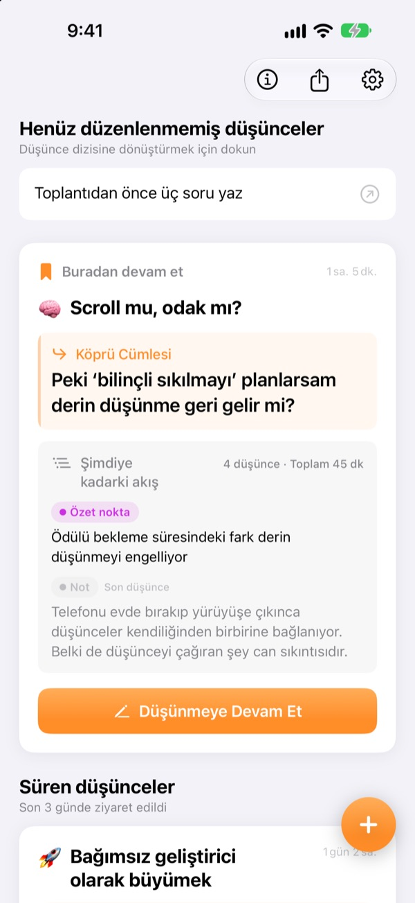
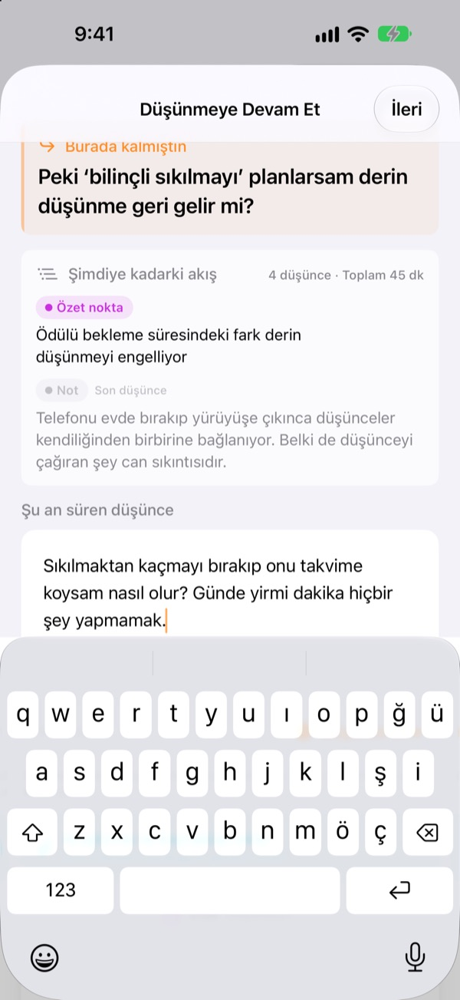
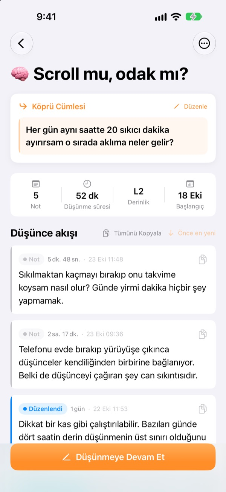
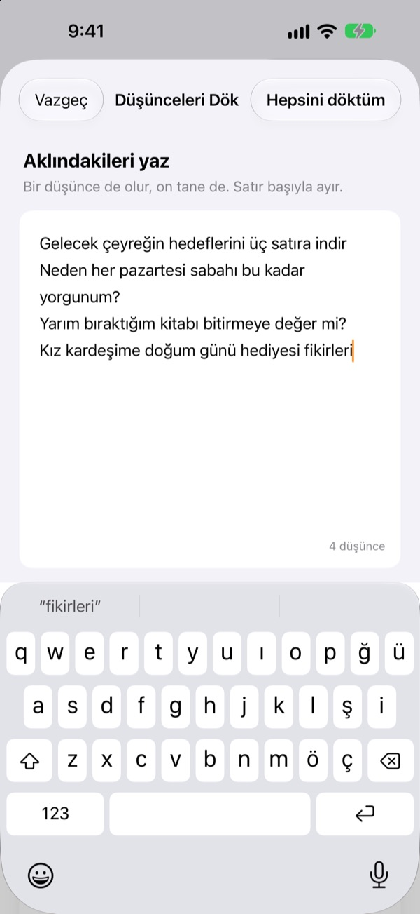

Dün yarım kalan düşüncen
bugün kaldığı yerden sürüyor
Düşünmeyi bıraktığında devam edeceğin bir satır bırak. Uygulamayı bir sonraki açışında o satır en üstte seni bekler.
Tüm özellikler ücretsiz. Hesap yok, her şey cihazında kalır.

Bir köprü cümlesi bırak
Bir düşünce yaz, sonra bir dahaki sefere devam edeceğin cümleyi bırak. Adımlar uygulamadakiyle aynı.
Nerede kalmıştım ben?
Geçen haftaki bir notu açıyorsun; birkaç sonuç var ama sonra kafa yormak istediğin soru yok. Ve her şeye sıfırdan başlıyorsun. ThinkFlow, bıraktığın anda o sıradaki soruyu yazdırır; geri döndüğünde doğrudan oradan başlarsın.
Köprü cümlen en üstte bekliyor
Oturumu tek bir satırla bitir: devam edeceğin soru. Geri döndüğünde o cümle, şimdiye kadarki özet noktalar ve son düşüncen tek bir kartta durur. Hiçbir şeyi yeniden toparlaman gerekmez.
Köprü cümlesi Ana Ekran widget’ında da görünür; düşünürken süre Kilit Ekranı’nda ve Dynamic Island’da işler.

Nottan özet noktaya
Her düşünceyi dört düzeyden geçir: not, düzenlendi, özet nokta ve özet. Ne kadar olgunlaştığını tek bakışta görürsün.
Aradığın ya da sorduğun şeyler materyal olarak eklenir, kendi düşüncelerinden ayrı durur.

Önce kafanı boşalt
Aklından geçen her şeyi her düşünceye bir satır olacak şekilde yaz, şimdi üzerinde çalışmak istediğini seç. O bir düşünce akışına dönüşür; geri kalanlar sen dokunana kadar ana ekranda bekler.
Üç günden uzun süredir dokunmadığın düşünceler Canlandırılacak düşünceler bölümünde toplanır.

Üç adımda başla
- 1
Düşüncelerini dök
Her düşünceye bir satır, sonra büyütmeye değeni seç.
- 2
Düşünmeye devam et
Her yeni fikri ayrı ekle, sonra olgunlaştırmak kolaylaşır.
- 3
Cümleyi bırak ve kapat
Bir dahaki sefere tam oradan başlarsın.
Olgunlaştırma düzeyi
- Not
- Ham düşünce
- Düzenlendi
- Bir kez düzenlendi
- Özet nokta
- Sadece öz
- Özet
- Son özet
Değiştirmek için düşüncenin yanındaki düzey etiketine dokun. Geri döndüğünde özet noktalar ve özetler kartta ilk sırada görünür.
Köprü cümlen en üstte bekliyor
Köprü cümlesi yazmak zorunda mıyım?
Bir şey eklediysen evet: Düşünmeye Devam Et ekranı ancak sıradaki satırı bıraktığında kapanır. Hiçbir şey yazmadıysan doğrudan kapatabilirsin. İşin sırrı, takıldığında değil, hâlâ söyleyecek bir şeyin varken durmak.
Canlandırılacak düşünceler nedir?
Üç günden uzun süredir açmadığın akışlar ana ekranda ayrı bir bölümde toplanır; böylece neredeyse unuttuğun bir düşünce köprü cümlesinden devam edebilir.
Hata bildirmek ya da öneride bulunmak istiyorum.
Uygulama ayarlarındaki Geri Bildirim Gönder seçeneğini kullan, aşağıdaki adrese yaz ya da github.com/M1zz/ThinkFlow/issues adresinde bir issue aç. Her mesaj memnuniyetle karşılanır.
Gerçekten her şey ücretsiz mi?
Evet. Tüm özellikler ücretsiz; reklam yok, hesap yok. Ayarlardaki “Geliştiriciyi Destekleyin” tamamen isteğe bağlıdır ve hiçbir şeyin kilidini açmaz.
Sorun ya da öneriler için leeo@kakao.com adresine yaz.